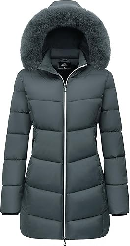
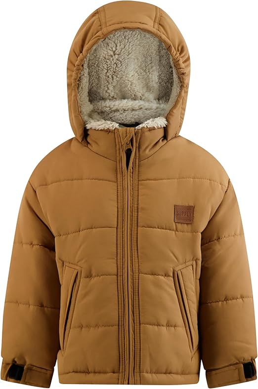

<INPUT TYPE=SUBMIT VALUE="Añadir producto al carrito" ></center>

<html>
<HEAD>
<Title>Abrigos</tiTle>
<!autor: Damaris Menjivar>
</head>
<body BGCOLOR="brown">
<center><font face="Bodoni MT" SIZE=7 COLOR="black">Abrigos</FONT></center>
<HR WIDTH=70% SIZE=10% COLOR="purple">
<FONT SIZE=7 COLOR=yellow>
<center><UL TYPE="SQUARE"></center>
<Center><LH>Abrigos de invierno para mujer.</LH></font></center>
<font size=5 color=black>
<Center></center>
<center><Li> A prueba de viento, abrigados, impermeables, gruesos, con capucha, chaqueta acolchada.</center>
<center><Li> Tipo de tejido: 100% poliéster + algodón hueco 3D.</center>
<center><Li> Color: Gris oscuro.</center>
<center><Li> Con puños acanalados resistentes al viento y tela de alta densidad, es resistente al viento en climas ventosos de invierno.</center>
<center><Li>Instrucciones de cuidado del material: Lavado a mano.</center>
<center><Li> US $69.99</center>
<center><INPUT TYPE=CHECKBOX NAME= variable> Opción<br><br></center>
<center><INPUT TYPE=RADIO NAME= variable VALUE=Talla S >Talla S<BR></center>
<center><INPUT TYPE=RADIO NAME= variable VALUE=Talla M >Talla M<BR></center>
<center><INPUT TYPE=RADIO NAME= variable VALUE=Talla N >Talla N<BR></center>
<center><INPUT TYPE=RADIO NAME= variable VALUE=Talla XL>Talla L<BR></center>
</UL></font>
</BODY>
</HTML>


<DL>
<FONT SIZE=7 COLOR=yellow>
<HR WIDTH=70% SIZE=10% COLOR="purple">
<center><LH>Elegante abrigo de invierno - Chaqueta acolchada.</LH></center>
<font size=5 color=black>
<center></center>
<DT>Tipo de tejido:
<font color=black>
<DD>100% poliéster.</font>
<DT>Descripción:
<font color=black>
<DD> Abrigo interior de piel Sherpa.</font>
<DT>Listo para el clima:
<font color=black>
<DD>Equipada con una carcasa resistente al agua, esta chaqueta te mantiene seco durante la lluvia ligera o la nieve.</font>
<DT>Fácil cierre de cremallera: 
<font color=black>
<dd>Con un cómodo cierre de cremallera.</font>
<DT>US:
<font color=black>
<dd>$29.60</font>
<DT>Usos Recomendados Para Producto:
<font color=black>
<dd>Lavable a máquina para una limpieza rápida y sin complicaciones.</font>
<DT>Tallas:
<font color=black>
<br><INPUT TYPE=CHECKBOX NAME= variable> Opción<br><br></center>
<INPUT TYPE=RADIO NAME= variable VALUE=Talla S >Talla S<BR>
<INPUT TYPE=RADIO NAME= variable VALUE=Talla M >Talla M<BR>
<INPUT TYPE=RADIO NAME= variable VALUE=Talla N >Talla N<BR>
<INPUT TYPE=RADIO NAME= variable VALUE=Talla XL>Talla L<BR>
</DL>
</BODY>
</HTML>


<FONT SIZE=7 COLOR=yellow>
<center><UL TYPE="square"></center>
<HR WIDTH=70% SIZE=10% COLOR="purple">
<Center><LH>Abrigo con bufanda cruzada.</LH></font></center>
<font size=5 color=black>
<Center></center>
<center><Li> Tipo de tejido: 60% lana, 35% poliéster, 5% otros fibras.</center>
<center><Li> Color: Gris pardo jaspeado.</center>
<center><Li> US $30.49</center>
<center><Li>Instrucciones de cuidado del material:Limpieza en seco.</center>
<center><br><INPUT TYPE=CHECKBOX NAME= variable> Opción<br><br></center>
<center><INPUT TYPE=RADIO NAME= variable VALUE=Talla S >Talla S<BR></center>
<center><INPUT TYPE=RADIO NAME= variable VALUE=Talla M >Talla M<BR></center>
<center><INPUT TYPE=RADIO NAME= variable VALUE=Talla N >Talla N<BR></center>
<center><INPUT TYPE=RADIO NAME= variable VALUE=Talla XL>Talla L<BR></center>
</UL></font>
</BODY>
</HTML>

<center><A HREF="Parcial.html">REGRESO AL INICIO</A></center>